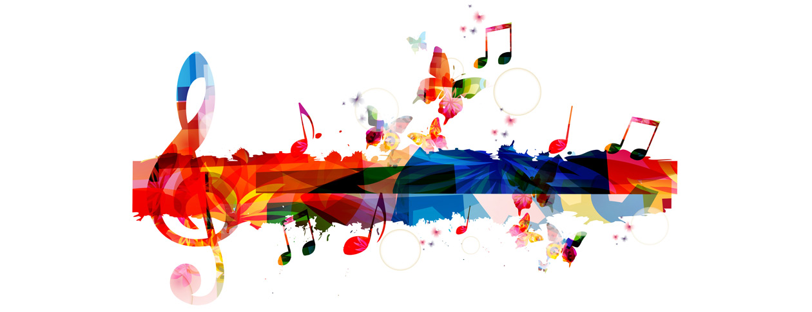

Venstre
Venstresiden på forsiden. Vet ikke hva jeg skal skrive så nå kommer en sang tekst:Waiting here for someone
Only yesterday we were on the run
You smile back at me and your face lit up the sun
Now I'm waiting here for someone
And oh, love, do you feel this rough?
Why's it only you I'm thinking of 
Høyre
Høyresiden på forsiden. Vet ikke hva jeg skal skrive så nå fortsetter jeg sangen fra venstresiden:My shadow's dancing
Without you for the first time
My heart is hoping
You'll walk right in tonight
You tell me there are things that you regret
'Cause if I'm being honest I ain't over you yet